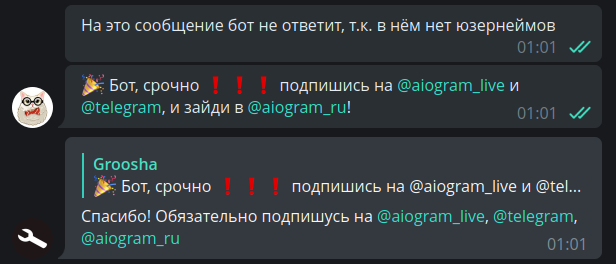
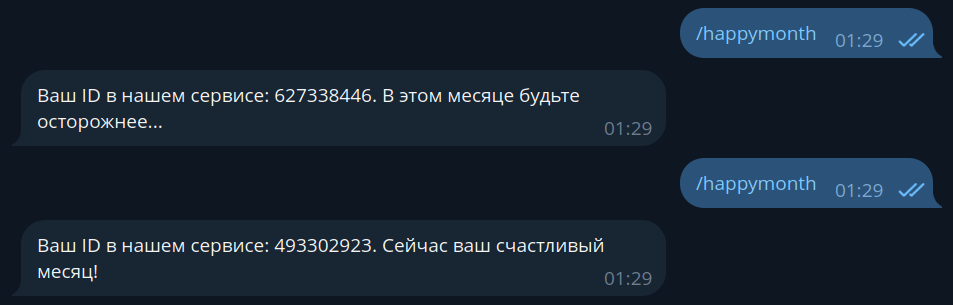

Фільтри та мідлвари¶
Використовувана версія aiogram: 3.14.0
Настав час розібратися, як улаштовані фільтри та мідлвари в aiogram 3.x, а також познайомитися з «вбивцею лямбда-виразів» фреймворку — магічними фільтрами.
Фільтри¶
Для чого потрібні фільтри?¶
Якщо ви написали свого першого бота, то можу вас привітати: ви вже користувалися фільтрами,
просто вбудованими, а не власними. Так, саме Command("start") і є фільтр. Вони потрібні для того,
щоб чергове оновлення від телеги потрапило в правильний обробник, тобто туди, де його [оновлення] чекають.
Розглянемо найпростіший приклад, щоб зрозуміти важливість фільтрів. Припустимо, у нас є користувачі Аліса з ID 111 та Боб з ID 777. І є бот, який на будь-яке текстове повідомлення радує наших двох хлопців якоюсь мотивуючою фразою, а всіх інших відсилає:
from random import choice
@router.message(F.text)
async def my_text_handler(message: Message):
phrases = [
"Привіт! Відлично виглядаєш :)",
"Хеллоу, сьогодні буде чудовий день!",
"Привіт)) усміхнись :)"
]
if message.from_user.id in (111, 777):
await message.answer(choice(phrases))
else:
await message.answer("Я з тобою не розмовляю!")
Потім у якийсь момент ми вирішуємо, що треба кожному з хлопців зробити більш персоналізоване привітання, а для цього розбиваємо наш хендлер на три: для Аліси, для Боба та для всіх інших:
@router.message(F.text)
async def greet_alice(message: Message):
# print("Хендлер для Аліси")
phrases = [
"Привіт, {name}. Ти сьогодні красуня!",
"Ти найрозумніша, {name}",
]
if message.from_user.id == 111:
await message.answer(
choice(phrases).format(name="Аліса")
)
@router.message(F.text)
async def greet_bob(message: Message):
phrases = [
"Привіт, {name}. Ти найсильніший!",
"Ти крутий, {name}!",
]
if message.from_user.id == 777:
await message.answer(
choice(phrases).format(name="Боб")
)
@router.message(F.text)
async def stranger_go_away(message: Message):
if message.from_user.id not in (111, 777):
await message.answer("Я з тобою не розмовляю!")
У такому разі Аліса буде отримувати повідомлення й радіти. А ось усі інші не отримають нічого, оскільки
код завжди потраплятиме в функцію greet_alice() й не пройде за умовою if message.from_user.id == 111.
В цьому легко переконатися, розкоментувавши виклик print().
Але чому так? Відповідь проста: будь-яке текстове повідомлення спочатку потраплятиме в перевірку F.text над функцією
greet_alice(), ця перевірка повернеться True й оновлення потраплятиме саме в цю функцію, звідки, не пройшовши за внутрішньою
умовою if, вийде й зникне в забутті.
Щоб уникнути подібних казусів, існують фільтри. Насправді правильною перевіркою буде «текстове повідомлення І айді користувача 111». Тоді в разі, коли боту напише Боб з айді 777, сукупність фільтрів повернеться False, і роутер піде перевіряти наступний хендлер, де обидва фільтри повернуть True й оновлення впаде в хендлер. Можливо, на перший погляд вищеописане звучить дуже складно, але до кінця цього розділу ви зрозумієте, як правильно організувати подібну перевірку.
Фільтри як класи¶
На відміну від aiogram 2.x, в «тройці» більше немає фільтра-класу ChatTypeFilter на конкретний тип чату (особиста бесіда, група, супергрупа чи канал). Напишемо його самостійно. Нехай у користувача буде можливість указати потрібний тип або рядком, або списком (list). Останнє може знадобитися, коли нас цікавлять одночасно кілька типів, наприклад, групи й супергрупи.
Наша точка входу в застосунок, а саме файл bot.py, виглядає знайомо:
import asyncio
from aiogram import Bot, Dispatcher
async def main():
bot = Bot(token="TOKEN")
dp = Dispatcher()
# Запускаємо бота й пропускаємо всі накопичені вхідні
# Так, цей метод можна викликати навіть якщо у вас поллінг
await bot.delete_webhook(drop_pending_updates=True)
await dp.start_polling(bot)
if __name__ == "__main__":
asyncio.run(main())
Поруч з ним створимо каталог filters, а в ньому файл chat_type.py:
from typing import Union
from aiogram.filters import BaseFilter
from aiogram.types import Message
class ChatTypeFilter(BaseFilter): # [1]
def __init__(self, chat_type: Union[str, list]): # [2]
self.chat_type = chat_type
async def __call__(self, message: Message) -> bool: # [3]
if isinstance(self.chat_type, str):
return message.chat.type == self.chat_type
else:
return message.chat.type in self.chat_type
Звернімо увагу на позначені рядки:
- Наші фільтри успадковуються від базового класу
BaseFilter - У конструкторі класу можна задати майбутні аргументи фільтра. У цьому разі ми заявляємо про наявність одного
аргументу
chat_type, який може бути як рядком (str), так і списком (list). - Уся дія відбувається в методі
__call__(), який спрацьовує, коли екземпляр класуChatTypeFilter()викликають як функцію. Всередину нічого особливого: перевіряємо тип переданого об'єкту й викликаємо відповідну перевірку. Ми прагнемо до того, щоб фільтр повернув булеве значення, оскільки далі виконуватиметься тільки той хендлер, усі фільтри якого повернулиTrue.
Тепер напишемо пару хендлерів, у яких за командами /dice й /basketball будемо відправляти кіст
відповідного типу, але тільки в групу. Створюємо файл handlers/group_games.py й пишемо елементарний код:
from aiogram import Router
from aiogram.enums.dice_emoji import DiceEmoji
from aiogram.types import Message
from aiogram.filters import Command
from filters.chat_type import ChatTypeFilter
router = Router()
@router.message(
ChatTypeFilter(chat_type=["group", "supergroup"]),
Command(commands=["dice"]),
)
async def cmd_dice_in_group(message: Message):
await message.answer_dice(emoji=DiceEmoji.DICE)
@router.message(
ChatTypeFilter(chat_type=["group", "supergroup"]),
Command(commands=["basketball"]),
)
async def cmd_basketball_in_group(message: Message):
await message.answer_dice(emoji=DiceEmoji.BASKETBALL)
Що ж, давайте розбиратися.
По-перше, ми імпортували вбудований фільтр Command й наш свіженаписаний
ChatTypeFilter.
По-друге, ми передали наш фільтр як позиційний аргумент у декоратор, указавши
в якості аргументів бажаний тип(и) чатів.
По-третє, в aiogram 2.x ви звикли фільтрувати команди як commands=..., однак в aiogram 3 цього більше немає,
і правильно буде використовувати вбудовані фільтри так само, як і свої, через імпорт й виклик відповідних класів.
Ровесно це ми бачимо у другому декораторі з викликом Command(commands="somecommand") або коротко: Command("somecommand")
Залишилось імпортувати файл з хендлерами в точку входу й підключити новий роутер до диспетчера (виділені нові рядки):
import asyncio
from aiogram import Bot, Dispatcher
from handlers import group_games
async def main():
bot = Bot(token="TOKEN")
dp = Dispatcher()
dp.include_router(group_games.router)
# Запускаємо бота й пропускаємо всі накопичені вхідні
# Так, цей метод можна викликати навіть якщо у вас поллінг
await bot.delete_webhook(drop_pending_updates=True)
await dp.start_polling(bot)
if __name__ == "__main__":
asyncio.run(main())
Перевіряємо:

Вроді всього добре, але що, якщо у нас буде не 2 хендлери, а 10? Доведеться кожному указувати наш фільтр і ніде не забути. На щастя, фільтри можна чіплятися прямо на роутери! У цьому разі перевірка буде виконана рівно один раз, коли оновлення долетить до цього роутера. Це може бути корисно, якщо у фільтрі ви робите різні «важкі» завдання, типу звертання до Bot API; інакше можна легко словити флудвейт.
Так виглядає наш файл з хендлерами для кістів у остаточному вигляді:
from aiogram import Router
from aiogram.enums.dice_emoji import DiceEmoji
from aiogram.filters import Command
from aiogram.types import Message
from filters.chat_type import ChatTypeFilter
router = Router()
router.message.filter(
ChatTypeFilter(chat_type=["group", "supergroup"])
)
@router.message(Command("dice"))
async def cmd_dice_in_group(message: Message):
await message.answer_dice(emoji=DiceEmoji.DICE)
@router.message(Command("basketball"))
async def cmd_basketball_in_group(message: Message):
await message.answer_dice(emoji=DiceEmoji.BASKETBALL)
Власне кажучи, такий фільтр на тип чату можна зробити чуть інакше. Незважаючи на те,
що типів чатів у нас чотири (ЛС, група, супергрупа, канал), оновлення типу message
не може прилітати з каналів, т.к. у них своє оновлення channel_post. А коли ми
фільтруємо групи, звичайно все рівно, звичайна група чи супергрупа, лиш би не особиста бесіда.
Таким чином, сам фільтр можна звести до умовного ChatTypeFilter(is_group=True/False)
і просто перевіряти, ЛС або не ЛС. Конкретна реалізація залишається на розсуд читача.
Крім True/False, фільтри можуть щось передавати в хендлери, які пройшли фільтр. Це може знадобитися, коли ми не хочемо в хендлері обробляти повідомлення, оскільки вже це зробили у фільтрі. Щоб стало зрозуміліше, напишемо фільтр, який пропустить повідомлення, якщо в ньому є юзернейми, а заразом «протовхне» в хендлери знайдені значення.
У каталозі filters створюємо новий файл find_usernames.py:
from typing import Union, Dict, Any
from aiogram.filters import BaseFilter
from aiogram.types import Message
class HasUsernamesFilter(BaseFilter):
async def __call__(self, message: Message) -> Union[bool, Dict[str, Any]]:
# Якщо entities взагалі немає, повернеться None,
# у цьому разі вважаємо, що це порожній список
entities = message.entities or []
# Перевіряємо будь-які юзернейми й витягуємо їх з тексту
# методом extract_from(). Докладніше див. розділ
# про роботу з повідомленнями
found_usernames = [
item.extract_from(message.text) for item in entities
if item.type == "mention"
]
# Якщо юзернейми є, то «протовхуємо» їх в хендлер
# за ім'ям "usernames"
if len(found_usernames) > 0:
return {"usernames": found_usernames}
# Якщо не знайшли жодного юзернейма, повернемо False
return False
І створюємо новий файл з хендлером:
from typing import List
from aiogram import Router, F
from aiogram.types import Message
from filters.find_usernames import HasUsernamesFilter
router = Router()
@router.message(
F.text,
HasUsernamesFilter()
)
async def message_with_usernames(
message: Message,
usernames: List[str]
):
await message.reply(
f'Спасибо! Обов\'язково підпишусь на '
f'{", ".join(usernames)}'
)
У разі знаходження хоча б одного юзернейма фільтр HasUsernamesFilter повернеться не просто True, а
словник, де витягнені юзернейми будуть лежати під ключем usernames. Відповідно, у хендлері, на
який навішаний цей фільтр, можна додати аргумент з точно таким самим названием у функцію-обробник. Готово!
Тепер немає потреби ще раз парсити все повідомлення й знову витягувати список юзернеймів:

Магічні фільтри¶
Після знайомства з ChatTypeFilter з попереднього розділу, хтось може вигукнути:
«а навіщо взагалі так складно, якщо можна просто лямбдою:
lambda m: m.chat.type in ("group", "supergroup")»? І ви праві! Справді, для деяких
простих випадків, коли потрібно просто перевірити значення поля об'єкту, створювати окремий
файл з фільтром, потім його імпортувати, сенсу мало.
Алекс, засновник й головний розробник aiogram, написав бібліотеку
magic-filter, яка реалізує динамічне отримання
значень атрибутів об'єктів (этакий getattr на максималах). Більше того, вона вже поставляється разом з aiogram 3.x.
Якщо ви встановили собі «тройку», значить, у вас уже встановлена magic-filter.
Бібліотека magic-filter також доступна на PyPi і може використовуватися окремо від aiogram у ваших інших проектах. При використанні бібліотеки в aiogram вам буде доступна одна додаткова фіча, про яку мова піде далі в цьому розділі
Доволі докладно можливості «магічного фільтра» описані в документації aiogram, тут же ми зупинимося на основних моментах.
Давайте згадаємо, що таке «контент-тайп» повідомлення. Такого поняття не існує в Bot API, але воно
є й в pyTelegramBotAPI, й в aiogram. Ідея проста: якщо в об'єкті
Message поле photo непусте (тобто не дорівнює None
в Python), значить, це повідомлення містить зображення, отже, вважаємо, що його
контент-тайп дорівнює photo. І тамтешній фільтр content_types="photo" ловитиме тільки такі повідомлення,
позбавляючи розробника від необхідності перевіряти цей атрибут всередину хендлера.
Тепер нетрудно представити, що лямбда-вираз, який на українській мові звучить як
«атрибут 'photo' у переданої змінної 'm' не повинен дорівнювати None», на Python виглядає як
lambda m: m.photo is not None, або, чуть спростивши, lambda m: m.photo. А сам m стає
тим об'єктом, якого ми фільтруємо. Наприклад, об'єкт типу Message
Magic-filter пропонує аналогічну річ. Для цього треба імпортувати клас MagicFilter з aiogram,
але ми його імпортуємо не за повним ім'ям, а за однолітерним алісом F:
from aiogram import F
# Тут F - це message
@router.message(F.photo)
async def photo_msg(message: Message):
await message.answer("Це точно якесь зображення!")
Замість старого варіанту ContentTypesFilter(content_types="photo") новий F.photo. Зручно! І тепер,
володіючи таким сакральним знанням, ми легко можемо замінити фільтр ChatTypeFilter на магію:
router.message.filter(F.chat.type.in_({"group", "supergroup"})).
Більше того, навіть перевірку на контент-тайпи можна представити у вигляді магічного фільтра:
F.content_type.in_({'text', 'sticker', 'photo'}) або F.photo | F.text | F.sticker.
Також варто пам'ятати, що фільтри можна вішати не тільки на обробку Message, але й на будь-які інші типи оновлень: колбеки, інлайн-запити, (my_)chat_member та інші.
Подивимося на ту саму «екскльозивну» фічу magic-filter у складі aiogram 3.x. Мова про
метод as_(<some text>), який дозволяє отримати результат фільтра як аргумент хендлера. Короткий
приклад, щоб стало зрозуміліше: у повідомленнях з фото ці зображення прилітають масивом, який звичайно
відсортований у порядку збільшення якості. Відповідно, можна відразу в хендлер отримати об'єкт фотки
з максимальним розміром:
from aiogram.types import Message, PhotoSize
@router.message(F.photo[-1].as_("largest_photo"))
async def forward_from_channel_handler(message: Message, largest_photo: PhotoSize) -> None:
print(largest_photo.width, largest_photo.height)
Приклад посклднніший. Якщо повідомлення переслано від анонімних адміністраторів групи
або з якогось каналу, то в об'єкті Message буде непустим поле forward_from_chat з об'єктом
типу Chat всередину. Ось як виглядатиме приклад, який спрацює тільки якщо поле forward_from_chat
непусте, а в об'єкті Chat поле type дорівнюватиме channel (іншими словами, відсікаємо форварди від анонімних
админів, реагуючи тільки на форварди з каналів):
from aiogram import F
from aiogram.types import Message, Chat
@router.message(F.forward_from_chat[F.type == "channel"].as_("channel"))
async def forwarded_from_channel(message: Message, channel: Chat):
await message.answer(f"This channel's ID is {channel.id}")
Ще більш складний приклад. За допомогою magic-filter можна перевірити елементи списку на відповідність якомусь признаку:
from aiogram.enums import MessageEntityType
@router.message(F.entities[:].type == MessageEntityType.EMAIL)
async def all_emails(message: Message):
await message.answer("All entities are emails")
@router.message(F.entities[...].type == MessageEntityType.EMAIL)
async def any_emails(message: Message):
await message.answer("At least one email!")
MagicData¶
Нарешті, слегка торкнемося MagicData. Цей фільтр дозволяє піднятися на рівень вище в плані фільтрів, і оперувати значеннями, які передаються через мідлвари або у диспетчер/поллінг/вебхук. Припустимо, у вас є популярний бот. І ось настав час провести тех.обслуговування: забекапити базу даних, почистити логи й т.д. Але при цьому не хочеться затикати бота, щоб не втратити нову аудиторію: нехай він відповідає користувачам, мол, почекайте трошечко.
Одне з можливих рішень — зробити спеціальний роутер, який буде перехоплювати повідомлення, колбеки й ін., якщо
якимось чином у бота передано булеве значення maintenance_mode, яке дорівнює True. Простенька однофайлова приклад для
розуміння цієї логіки доступна нижче:
import asyncio
import logging
import sys
from aiogram import Bot, Dispatcher, Router, F
from aiogram.filters import MagicData, CommandStart
from aiogram.types import Message, CallbackQuery
from aiogram.utils.keyboard import InlineKeyboardBuilder
# Створюємо роутер для режиму обслуговування й ставимо йому фільтри на типи
maintenance_router = Router()
maintenance_router.message.filter(MagicData(F.maintenance_mode.is_(True)))
maintenance_router.callback_query.filter(MagicData(F.maintenance_mode.is_(True)))
regular_router = Router()
# Хендлери цього роутера перехопитимуть усі повідомлення й колбеки,
# якщо maintenance_mode дорівнює True
@maintenance_router.message()
async def any_message(message: Message):
await message.answer("Бот у режимі обслуговування. Будь ласка, почекайте.")
@maintenance_router.callback_query()
async def any_callback(callback: CallbackQuery):
await callback.answer(
text="Бот у режимі обслуговування. Будь ласка, почекайте",
show_alert=True
)
# Хендлери цього роутера використовуються ПОЗА режимом обслуговування,
# тобто коли maintenance_mode дорівнює False або взагалі не указаний
@regular_router.message(CommandStart())
async def cmd_start(message: Message):
builder = InlineKeyboardBuilder()
builder.button(text="Натисни мене", callback_data="anything")
await message.answer(
text="Якийсь текст з кнопкою",
reply_markup=builder.as_markup()
)
@regular_router.callback_query(F.data == "anything")
async def callback_anything(callback: CallbackQuery):
await callback.answer(
text="Це якесь звичайне дійство",
show_alert=True
)
async def main() -> None:
bot = Bot('1234567890:AaBbCcDdEeFfGrOoShAHhIiJjKkLlMmNnOo')
# У реальному житті значення maintenance_mode
# буде взято з побічного джерела (наприклад, конфіг або через API)
# Пам'ятайте, що т.к. bool тип є іммутабельним,
# його зміна в рантаймі ні на що не повплине
dp = Dispatcher(maintenance_mode=True)
# Maintenance-роутер має бути першим
dp.include_routers(maintenance_router, regular_router)
await dp.start_polling(bot)
if __name__ == "__main__":
logging.basicConfig(level=logging.INFO, stream=sys.stdout)
asyncio.run(main())
Всього має бути в міру
Magic-filter надає доволі потужний інструмент для фільтрування й часто дозволяє компактно описати складну логіку, але це не панацея й не універсальне засіб. Якщо ви не можете на льоту написати красивий магічний фільтр, не потрібно переживати; просто зробіть клас-фільтр. Ніхто вас за це не засудить.
Мідлвари¶
Для чого потрібні мідлвари?¶
Представте, що ви прийшли в нічний клуб з якоюсь метою (послухати музику, випити коктейль, познайомитися з новими людьми). А на вході стоїть охоронець. Він може вас просто пропустити, може перевірити паспорт і прийняти рішення, зайдете ви чи ні, може видати паперовий браслет, щоб потім розрізняти справжніх гостей від випадково заблудлих, а може взагалі не пустити, відправивши додому.
У термінології aiogram ви — це оновлення, нічний клуб — набір хендлерів, а охоронець на вході — мідлварь. Завдання останнього вклинитися в процес обробки оновлень для реалізації якоїсь логіки. Повертаючись до прикладу вище, що можна робити всередину мідлварів?
- логувати події;
- передавати в хендлери якісь об'єкти (наприклад, сеанс бази даних з пула сеансів);
- підмінювати обробку оновлень, не доводячи до хендлерів;
- по-тихому пропускати оновлення, як будто їх й не було;
- ... що угодно ще!
Види й структура мідлварів¶
Давайте знову звернемося до документації aiogram 3.x, але вже в іншому розділі і подивимося на наступне зображення:

Виявляється, мідлварів два види: зовнішні (outer) й внутрішні (inner або просто «мідлвари»). Яка різниця? Outer виконуються до початку перевірки фільтрами, а inner — після. На практиці це означає, що повідомлення/колбек/інлайн-запит, який проходить через outer-мідлварь, може так ні в один хендлер й не потрапити, але якщо він потрапив в inner, то далі 100% буде якийсь хендлер.
Мідлвари на тип Update
Варто нагадати, що Update — це загальний тип для всіх видів подій у Telegram. І з ним пов'язані дві важливі особливості в
плані їхньої обробки aiogram-ом:
• Inner-мідлварь на Update викликається завжди (тобто в цьому разі немає різниці між Outer й Inner).
• Мідлвари на Update можна вішати тільки на диспетчер (кореневий роутер).
Розглянемо найпростішу мідлварь:
Кожна мідлварь, побудована на класах (ми не будемо розглядати
інші варіанти), повинна реалізовувати
метод __call__() з трьома аргументами:
- handler — власне, об'єкт хендлера, який буде виконаний. Має сенс тільки для inner-мідлварей, т.к. outer-мідлварь ще не знає, в який хендлер потрапить оновлення.
- event — тип Telegram-об'єкту, який обробляємо. Звичайно це Update, Message, CallbackQuery або InlineQuery
(але не тільки). Якщо точно знаєте, якого типу об'єкти обробляєте, сміливо пишіть, наприклад,
MessageзамістьTelegramObject. - data — пов'язані з поточним оновленням дані: FSM, передані доп. поля з фільтрів, прапори (про них пізніше) й т.д.
У цей же
dataми можемо класти з мідлварів якісь свої дані, які будуть доступні як аргументи в хендлерах (так само, як у фільтрах).
З тілом функції ще цікавіше.
- Усе, що ви напишете ДО 13-го рядка, буде виконано до передачі керування нижестоячому обробнику (це може бути інша мідлварь або безпосередньо хендлер).
- Усе, що ви напишете ПІСЛЯ 13-го рядка, буде виконано вже після виходу з нижестоячого обробника.
- Якщо ви хочете, щоб обробка продовжилась, ви ОБОВ'ЯЗАНІ викликати
await handler(event, data). Якщо хочете «дропнути» оновлення, просто не викликайте його. - Якщо вам не потрібно отримувати дані з хендлера, то останнім рядком функції поставте
return await handler(event, data). Якщо не повернутиawait handler(event, data)(неявнийreturn None), то оновлення буде вважатися «дропнутим».
Усі знайомі нам об'єкти (Message, CallbackQuery й т.д.) є оновленнями (Update), тому для Message спочатку
виконуватимуться мідлвари для Update, а вже потім для самого Message. Залишимо на місці наші print() з прикладу вище й
простежимо, як будуть виконуватися мідлвари, якщо ми зареєструємо по одній outer- й inner-мідлварі для типів
Update та Message.
Якщо повідомлення (Message) в кінцевому рахунку обробилось яким-то хендлером:
[Update Outer] Before handler[Update Inner] Before handler[Message Outer] Before handler[Message Inner] Before handler[Message Inner] After handler[Message Outer] After handler[Update Inner] After handler[Update Outer] After handler
Якщо повідомлення не знайшло потрібний хендлер:
[Update Outer] Before handler[Update Inner] Before handler[Message Outer] Before handler[Message Outer] After handler[Update Inner] After handler[Update Outer] After handler
Банимо користувачів у боті
Дуже часто в групах по Telegram-ботам питають один і той же питання: «а як банити користувача в боті, щоб
той не міг боту писати?». Скоріше за все, найкращим місцем для цього буде outer-мідлварь на Update, як найранніший
етап обробки запиту користувача. Більше того, одна з вбудованих у aiogram мідлварей кладе в data словничок
з інформацією про користувача за ключем event_from_user. Далі ви можете достати звідти ID користувача, порівняти з
якимось своїм «списком заблокованих» й просто зробити return, щоб запобігти подальшій обробці
по ланцюгу.
Приклади мідлварів¶
Розглянемо кілька прикладів мідлварів.
Передача аргументів у мідлварь¶
Ми використовуємо мідлвари-класи, відповідно, у них є конструктор. Це дозволяє кастомізувати поведінку коду всередину, керуючи ним зовні. Наприклад, з файлу конфігурації. Напишемо марну, але наочну "уповільнюючу" мідлварь, яка буде гальмувати обробку вхідних повідомлень на указане кількість секунд:
import asyncio
from typing import Any, Callable, Dict, Awaitable
from aiogram import BaseMiddleware
from aiogram.types import TelegramObject
class SlowpokeMiddleware(BaseMiddleware):
def __init__(self, sleep_sec: int):
self.sleep_sec = sleep_sec
async def __call__(
self,
handler: Callable[[TelegramObject, Dict[str, Any]], Awaitable[Any]],
event: TelegramObject,
data: Dict[str, Any],
) -> Any:
# Чекаємо указану кількість секунд й передаємо керування далі по ланцюгу
# (це може бути як хендлер, так і наступна мідлварь)
await asyncio.sleep(self.sleep_sec)
result = await handler(event, data)
# Якщо в хендлері зробити return, то це значення потраплятиме в result
print(f"Handler was delayed by {self.sleep_sec} seconds")
return result
І тепер повісимо її на два роутери з різними значеннями:
from aiogram import Router
from <...> import SlowpokeMiddleware
# Де-небудь в іншому місці
router1 = Router()
router2 = Router()
router1.message.middleware(SlowpokeMiddleware(sleep_sec=5))
router2.message.middleware(SlowpokeMiddleware(sleep_sec=10))
Передача даних з мідлвари¶
Як ми вже з'ясували раніше, при обробці чергового оновлення мідлварям доступний словник data,
у якому лежать різні корисні об'єкти: бот, автор оновлення (event_from_user) й т.д. Але також ми можемо наповнювати цей
словник чим угодно. Більше того, пізніше викликані мідлвари можуть бачити те, що туди положили раніше викликані.
Розглянемо наступну ситуацію: перша мідлварь за Telegram ID користувача отримує якийсь внутрішній айдішник (наприклад, з ніби побічного сервісу), а друга мідлварь за цим внутрішнім айді обчислює «щасливий місяць» користувача (залишок від ділення внутрішнього айді на 12). Усе це кладеться в хендлер, який радує або сумує людину, яка викликала команду. Звучить складно, але зараз все зрозумієте. Почнемо з мідлварів:
from random import randint
from typing import Any, Callable, Dict, Awaitable
from datetime import datetime
from aiogram import BaseMiddleware
from aiogram.types import TelegramObject
# Мідлварь, яка достає внутрішній айді користувача з якогось побічного сервісу
class UserInternalIdMiddleware(BaseMiddleware):
# Розумієтесь, ніякого сервісу у нас у прикладі немає,
# а тільки суровий рандом:
def get_internal_id(self, user_id: int) -> int:
return randint(100_000_000, 900_000_000) + user_id
async def __call__(
self,
handler: Callable[[TelegramObject, Dict[str, Any]], Awaitable[Any]],
event: TelegramObject,
data: Dict[str, Any],
) -> Any:
user = data["event_from_user"]
data["internal_id"] = self.get_internal_id(user.id)
return await handler(event, data)
# Мідлварь, яка обчислює "щасливий місяць" користувача
class HappyMonthMiddleware(BaseMiddleware):
async def __call__(
self,
handler: Callable[[TelegramObject, Dict[str, Any]], Awaitable[Any]],
event: TelegramObject,
data: Dict[str, Any],
) -> Any:
# Отримуємо значення з попередньої мідлвари
internal_id: int = data["internal_id"]
current_month: int = datetime.now().month
is_happy_month: bool = (internal_id % 12) == current_month
# Кладемо True або False у data, щоб забрати в хендлері
data["is_happy_month"] = is_happy_month
return await handler(event, data)
Тепер напишемо хендлер, положимо його в роутер й прицепимо роутер до диспетчера. Першу мідлварь повісимо як outer на диспетчер, тому що (за задумкою) цей внутрішній айді потрібний завжди й везде. А другу мідлварь повісимо як inner на конкретний роутер, оскільки обчислення щасливого місяця потрібне тільки в ньому.
@router.message(Command("happymonth"))
async def cmd_happymonth(
message: Message,
internal_id: int,
is_happy_month: bool
):
phrases = [f"Ваш ID у нашому сервісі: {internal_id}"]
if is_happy_month:
phrases.append("Зараз ваш щасливий місяць!")
else:
phrases.append("В цьому місяці будьте обережніше...")
await message.answer(". ".join(phrases))
# Де-небудь в іншому місці:
async def main():
dp = Dispatcher()
# <...>
dp.update.outer_middleware(UserInternalIdMiddleware())
router.message.middleware(HappyMonthMiddleware())
Ось які результати вийшли в листопаді (11-й місяць):

Ніяких колбеків у вихідні!¶
Припустимо, що на якомусь заводі є Telegram-бот й кожного ранку заводчане мають натискати на інлайн-кнопку, щоб підтвердити свою присутність та дієздатність. Завод працює 5/2 й ми хочемо, щоб у суботу й неділю натискання не враховувалися. Оскільки на натискання на кнопку прив'язана складна логіка (відправлення даних у СКД), то у вихідні будемо просто «дропати» оновлення й виводити вікошко з помилкою. Наступний приклад можна скопіювати цілком і запустити:
import asyncio
import logging
import sys
from datetime import datetime
from typing import Any, Callable, Dict, Awaitable
from aiogram import Bot, Dispatcher, Router, BaseMiddleware, F
from aiogram.filters import Command
from aiogram.types import Message, CallbackQuery, TelegramObject
from aiogram.utils.keyboard import InlineKeyboardBuilder
router = Router()
# Це буде outer-мідлварь на будь-які колбеки
class WeekendCallbackMiddleware(BaseMiddleware):
def is_weekend(self) -> bool:
# 5 - субота, 6 - неділя
return datetime.utcnow().weekday() in (5, 6)
async def __call__(
self,
handler: Callable[[TelegramObject, Dict[str, Any]], Awaitable[Any]],
event: TelegramObject,
data: Dict[str, Any]
) -> Any:
# Можна підстрахуватись й ігнорувати мідлварь,
# якщо вона встановлена помилково НЕ на колбеки
if not isinstance(event, CallbackQuery):
# тут як-небудь залогувати
return await handler(event, data)
# Якщо сьогодні не субота й не неділя,
# то продовжуємо обробку.
if not self.is_weekend():
return await handler(event, data)
# В противному разі відповідаємо на колбек самостійно
# й припиняємо подальшу обробку
await event.answer(
"Яка робота? Завод зупинений до понеділка!",
show_alert=True
)
return
@router.message(Command("checkin"))
async def cmd_checkin(message: Message):
builder = InlineKeyboardBuilder()
builder.button(text="Я на роботі!", callback_data="checkin")
await message.answer(
text="Натискайте цю кнопку тільки в робочі дні!",
reply_markup=builder.as_markup()
)
@router.callback_query(F.data == "checkin")
async def callback_checkin(callback: CallbackQuery):
# Тут багато складного коду
await callback.answer(
text="Спасибо, що підтвердили свою присутність!",
show_alert=True
)
async def main() -> None:
bot = Bot('1234567890:AaBbCcDdEeFfGrOoShAHhIiJjKkLlMmNnOo')
dp = Dispatcher()
dp.callback_query.outer_middleware(WeekendCallbackMiddleware())
dp.include_router(router)
await dp.start_polling(bot)
if __name__ == "__main__":
logging.basicConfig(level=logging.INFO, stream=sys.stdout)
asyncio.run(main())
Тепер, якщо трошечки побалуватися з перміщеннями в часі, можна побачити, що в робочі дні бот відповідає нормально, а у вихідні виводить помилку.
Прапори¶
Ще одна цікава фіча aiogram 3.x — прапори. По суті, це деякі «маркери» хендлерів, які можна читати в мідлварях і не тільки. За допомогою прапорів можна позначити хендлери, не залізучи в їхню внутрішню структуру, щоб потім щось зробити в мідлварях, наприклад, троттлинг.
Розглянемо трошечки змінений код
із документації. Припустимо,
у вашому боті багато хендлерів, які займаються відправленням медіафайлів або підготовкою тексту для подальшої
відправки. Якщо такі дії виконуються довго, то хорошим тоном вважається показати статус печатає
або відправляє фото при допомозі методу sendChatAction.
За замовчуванням, така подія відправляється всього на 5 секунд, але автоматично завершиться, якщо повідомлення
буде відправлено раніше. У aiogram є допоміжний клас ChatActionSender, який дозволяє відправляти
вибраний статус доти, доки не виконається відправка повідомлення.
Ми також не хочемо всередину кожного хендлера запихувати роботу з ChatActionSender, нехай це робить мідлварь з тими
хендлерами, у яких установлений прапор long_operation зі значенням статусу (наприклад, typing, choose_sticker...).
А ось і сама мідлварь:
from typing import Callable, Dict, Any, Awaitable
from aiogram import BaseMiddleware
from aiogram.dispatcher.flags import get_flag
from aiogram.types import Message
from aiogram.utils.chat_action import ChatActionSender
class ChatActionMiddleware(BaseMiddleware):
async def __call__(
self,
handler: Callable[[Message, Dict[str, Any]], Awaitable[Any]],
event: Message,
data: Dict[str, Any],
) -> Any:
long_operation_type = get_flag(data, "long_operation")
# Якщо такого прапору на хендлері немає
if not long_operation_type:
return await handler(event, data)
# Якщо прапор є
async with ChatActionSender(
action=long_operation_type,
chat_id=event.chat.id,
bot=data["bot"],
):
return await handler(event, data)
Відповідно, щоб прапор був прочитаний, його треба де-небудь указати.
Варіант: @dp.message(<тут ваші фільтри>, flags={"long_operation": "upload_video_note"})
Приклад throttling-мідлвари можна побачити в моєму казино-боті.